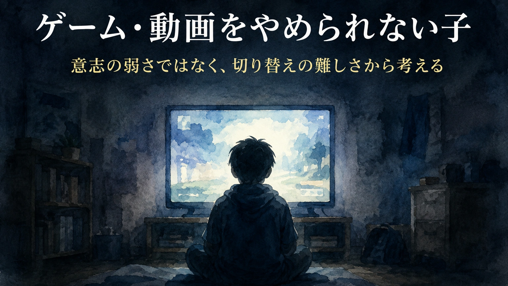

「あと5分」と言ったのに終わらない。動画を止めると怒る。 ゲームを切ると泣く、暴言になる、宿題やお風呂、睡眠が後回しになる。 そんな日が続くと、保護者は「この子は意志が弱いのではないか」 「親の管理が甘いのではないか」と不安になります。 けれども、ゲームや動画をやめられない背景には、 意志の弱さだけでは説明できない切り替えの難しさ、不安の回避、 報酬の強さ、生活リズムの乱れ、家庭内ルールのあいまいさが隠れていることがあります。
この記事は、ゲームや動画との付き合い方について、家庭で子どもを責めずに状況を整理し、学校や関係機関と相談しやすくするためのコラムです。診断や治療、個別の法的判断の代わりではありません。
1. 「意志が弱い」で終わらせない
ゲームや動画をやめられない子を見ると、大人はつい 「自分で決めた約束でしょ」 「どうして守れないの」 「意志が弱い」と言いたくなります。 もちろん、生活の中で約束を守ることは大切です。
ただし、子どもにとってゲームや動画は、単なる暇つぶしではない場合があります。 楽しい、達成感がある、友達とつながれる、現実の不安を忘れられる、 自分がうまくできる場所になる。 そうした役割を持っていることがあります。
そのため、「やめなさい」と言われた瞬間、子どもは娯楽を止められるだけでなく、 安心できる場所や、自分を保つ手段を急に奪われたように感じることがあります。 ここを見ないまま取り上げると、親子の対立だけが強くなります。
大切なのは、ゲームや動画を全面的に肯定することでも、全面的に禁止することでもありません。 生活を壊さない範囲で使えるように、始め方と終わり方を設計することです。
2. ゲーム・動画がやめにくい理由
ゲームや動画は、子どもがやめにくくなるように作られている面があります。 次の動画が自動再生される。短い動画が次々に流れる。 ゲーム内で報酬が出る。あと少しでクリアできそうになる。 オンラインの友達との約束がある。 こうした仕組みは、大人にとっても切り替えが難しいものです。
| やめにくくなる要素 | 子どもに起きやすいこと | 支援の方向 |
|---|---|---|
| 自動再生 | 終わりが見えず、次々に見続ける | 自動再生を切る。見る本数を先に決める |
| オンライン対戦 | 途中で抜けにくい。友達関係が気になる | 対戦の区切りを確認し、終了時刻ではなく終了条件も決める |
| 報酬やレベルアップ | あと少しで達成できる感覚が続く | 達成後に終わる約束を作る |
| ショート動画 | 短時間のつもりが長時間になる | タイマー、視聴場所、端末の置き場を決める |
| 現実からの回避 | 宿題、不安、失敗感を忘れるために使う | 現実側の負荷を減らす。終わった後に戻る場所を作る |
「やめられない」は、本人の意志だけの問題とは限りません。 仕組み、環境、気持ち、生活リズムが重なって起きていることがあります。
補論：ゲームは「歩く前に走る」環境でもある
ゲームや動画には、子どもを強く引き込む仕組みがあります。 説明を聞いてから少しずつ覚えるというより、まず操作し、失敗し、すぐに結果が返ってきて、 その中で体が覚えていく。いわば「習うより慣れろ」「歩く前に走れ」に近い学習環境です。
その仕組みは、教育的に見れば大きな可能性も持っています。 すぐに反応が返ること、何度でも試せること、達成感があることは、 子どもの学びを支える力にもなります。
一方で、その強さは、やめにくさにもつながります。 医薬品であれば、販売前に安全性や有効性を確認する段階があります。 しかしゲームや動画の多くは、子どもの生活の中に広く入り込んだあとで、 その影響を社会が追いかけて考えてきた面があります。
だからこそ、ゲームや動画を単に「悪いもの」と決めつけるのではなく、 その設計が子どもの切り替えや生活にどのように影響しているのかを、 大人が冷静に見る必要があります。
3. 心配したいサイン
ゲームや動画が好きなこと自体は問題ではありません。 ただし、生活や心身に影響が出ている場合は、早めに見直す必要があります。
心配したいサイン
- 睡眠時間が大きく削られている
- 朝起きられず、遅刻や欠席が増えている
- 食事、入浴、歯みがき、宿題が毎日後回しになる
- やめるように言うと、強い暴言や暴力が出る
- 隠れて使う、嘘をつく、端末を持ち出す
- 高額な課金や無断課金がある
- 学校や友達、外遊びへの関心が大きく減っている
- ゲームや動画をしていない時間に強いイライラや不安が出る
- 本人も「やめたいのにやめられない」と言う
- 家庭内で毎日大きな衝突が起きている
このようなサインが続く場合は、家庭内の注意だけで抱え込まないことが大切です。 学校、スクールカウンセラー、医療機関、地域の相談窓口などにつなぐことも選択肢になります。
4. 始める前に終わり方を決める
ゲームや動画のルールは、始める前に決めることが重要です。 夢中になってからルールを出すと、子どもは「急に奪われた」と感じやすくなります。
特に大切なのは、時間だけでなく、終了条件を決めることです。 「30分で終わり」と言っても、オンライン対戦中や動画の途中では切り替えにくい場合があります。 そのため、時間と区切りを組み合わせます。
始める前に決めること
- 何時まで使うか
- どの動画を何本見るか
- どの対戦、どのステージ、どの区切りで終わるか
- 終わった後に何をするか
- 終わる5分前に、誰がどう知らせるか
- 約束を守れなかったとき、次回どう調整するか
始める前の声かけ例
「今から始める前に、終わり方を決めよう。
今日は7時まで。対戦中なら、その試合が終わったところで終了。
終わったら、先にお風呂。その後に明日の準備をする。
5分前に声をかけるから、そこで次を始めないようにしよう。」
ルールは、紙に書く、ホワイトボードに書く、チェック表にするなど、 見える形にすると効果的です。 口約束だけでは、親子の記憶が食い違いやすくなります。
5. 終わるときの支援
切り替えが苦手な子にとって、終わる瞬間は最も荒れやすい場面です。 そのため、終わる直前にいきなり「はい終わり」と言うより、 段階を作るほうがうまくいくことがあります。
| 段階 | 支援の例 |
|---|---|
| 10分前 | 「あと10分。次の対戦は始めない時間だよ」と知らせる |
| 5分前 | タイマーを見せ、「終わる準備」に入る |
| 終了時 | 責めずに、決めた区切りで止める |
| 終了後 | すぐ説教せず、次の行動を短く示す |
| 落ち着いた後 | 守れた点、難しかった点、次回の調整を確認する |
終わるときの声かけ例
「約束の区切りまで来たね。ここで終わり。
文句を言いたい気持ちはあっていい。
でも、次を始めるのはなし。
まず水を飲んで、お風呂に行こう。」
終了時に長い説教をすると、子どもはさらに切り替えにくくなることがあります。 話し合いは、感情が落ち着いてから短く行います。
6. 終わった後の行き先を作る
ゲームや動画を終わらせるときに見落とされやすいのが、 終わった後の行き先です。 「やめなさい」と言われても、その後に何をすればよいかわからないと、 子どもはまた画面に戻りやすくなります。
特に、ゲームや動画が不安や退屈を紛らわせる役割を持っている場合、 ただ取り上げるだけでは空白が生まれます。 その空白を、別の行動で埋める必要があります。
終わった後の行き先の例
- 水を飲む
- お風呂に入る
- 明日の準備をする
- 5分だけ親と話す
- 軽い運動をする
- 好きな本や漫画を見る
- ブロック、絵、工作、音楽など手を使う活動をする
- 宿題を最初の一問だけ始める
- 寝る前の決まった流れに入る
代替行動は、立派なものでなくて構いません。 画面から離れたあと、体と気持ちを次の生活へ戻すための橋渡しになればよいのです。
7. 家庭内ルールの作り方
家庭内ルールは、厳しければよいわけではありません。 守れないルールを作ると、毎日「破った」「叱った」「隠した」の繰り返しになります。 大切なのは、守れる形に小さくすることです。
| あいまいなルール | 具体的なルール |
|---|---|
| やりすぎない | 平日は夕食前に30分。休日は午前と午後に各45分 |
| 宿題が終わったら | 宿題の最初の20分を終えてから使う |
| 夜はほどほどに | 端末は20時30分にリビングの充電場所へ置く |
| 課金しない | 課金は保護者の確認なしではしない。パスワードは保護者が管理する |
| ちゃんとやめる | 5分前に次を始めず、終了時刻になったら保存して終わる |
ルールは、子どもと相談して決める部分と、大人が安全のために決める部分を分けます。 たとえば、課金、深夜利用、個人情報、知らない人とのやり取りは、 子どもの希望だけで決めるものではありません。 ここは大人が責任を持つ必要があります。
ルール確認の言い方
「ゲームを全部だめにしたいわけではないよ。
ただ、睡眠、学校、食事、家族との約束が壊れる使い方は困る。
楽しむために、守れるルールを一緒に作ろう。」
8. 発達特性がある場合に見たいこと
発達特性がある子の中には、ゲームや動画から切り替えることが特に難しい子がいます。 ただし、「やめられないから発達障害」と決めつけることはできません。 見るべきなのは診断名ではなく、どの部分でつまずいているかです。
| 見えやすい困りごと | 背景にあるかもしれないこと | 支援の方向 |
|---|---|---|
| 終わる時間を忘れる | 時間感覚の弱さ、集中しすぎる傾向 | タイマー、視覚的なカウントダウン、終了予告を使う |
| 急に止められるとパニックになる | 予定変更や中断への弱さ | 始める前に終了条件を決める。途中で急に変えない |
| 負けると強く怒る | 感情の切り替えの難しさ、失敗への不安 | 負けた後の行動を先に決める |
| 動画を次々に見続ける | 刺激への引き込まれやすさ | 自動再生を切る。見る本数を決める |
| 現実の活動に戻れない | 学校、宿題、人間関係への不安 | 現実側の負荷を調整する。戻る行動を小さくする |
切り替え支援では、「本人が納得すればできる」と考えすぎないことも大切です。 納得していても、実際の場面では止まれない子がいます。 その場合は、気持ちの説明だけでなく、環境設定が必要です。
9. 相談が必要なとき
次のような状態が続く場合は、家庭内のルールだけで解決しようとせず、 学校や専門機関に相談することを検討します。
相談を考えたい状態
- 昼夜逆転が続いている
- 遅刻、欠席、不登校につながっている
- 食事、入浴、睡眠など基本的な生活が崩れている
- 制限すると暴力や物を壊す行動が出る
- 無断課金や高額課金がある
- 本人が「やめたいのにやめられない」と苦しんでいる
- ゲームや動画以外の楽しみがほとんどなくなっている
- 保護者が疲れ切り、家庭内で安全に対応できなくなっている
相談先としては、担任、養護教諭、スクールカウンセラー、スクールソーシャルワーカー、 小児科、児童精神科、精神保健福祉センター、自治体の相談窓口などがあります。 インターネット上の被害、課金トラブル、有害情報、犯罪被害などが関係する場合は、 消費生活センターや警察相談、こども家庭庁が案内する相談窓口も選択肢になります。
10. 家庭で整理しておきたいメモ
相談やルールづくりの前に、家庭で次のようなメモを作ると、 「何時間やったか」だけでなく、生活全体への影響が見えやすくなります。
このメモの目的は、子どもを監視することではありません。 何が崩れていて、どこなら調整できるのかを見えるようにすることです。
11. 避けたい言葉と、置き換えたい言葉
保護者が追い詰められると、どうしても強い言葉が出ます。 ただ、人格を責める言葉は、子どもを動かすよりも対立を強めることがあります。
| 避けたい言葉 | 置き換えたい言葉 |
|---|---|
| 「意志が弱い」 | 「切り替える仕組みを一緒に作ろう」 |
| 「もう全部禁止」 | 「生活が崩れない使い方に変えよう」 |
| 「何回言えばわかるの」 | 「口約束では難しいから、見えるルールにしよう」 |
| 「ゲームばかりでだめ」 | 「ゲーム以外で休める方法も増やそう」 |
| 「取り上げるよ」 | 「約束が守れないときは、次の使い方を調整するよ」 |
もちろん、暴力や危険な使い方がある場合は、毅然と止める必要があります。 その場合も、「あなたがだめ」ではなく、 「この使い方は安全ではないから止める」と伝えるほうが、行動に焦点を当てられます。
まとめ：やめさせる前に、終わり方を設計する
ゲームや動画をやめられない子を、「意志が弱い」「親の管理が甘い」と決めつけると、 何が起きているのかが見えにくくなります。
ゲームや動画には、楽しみ、達成感、友達とのつながり、不安を紛らわせる役割があります。 だからこそ、ただ禁止するだけでは、子どもは強く反発したり、隠れて使ったりすることがあります。
大切なのは、始める前に終わり方を決めること。 終了予告を見える形にすること。 終わった後の行き先を作ること。 生活への影響を見ながら、守れるルールに調整することです。
そして、睡眠、食事、登校、学習、家族関係、安全に大きな影響が出ている場合は、 家庭だけで抱え込む必要はありません。 学校、医療、福祉、相談窓口とつながりながら、 子どもが画面以外にも安心できる場所を持てるように整えていきましょう。
ゲームや動画の使い方は、家庭のルールだけでなく、学校での疲れ、不安、発達特性、睡眠、友達関係ともつながることがあります。 家庭だけで抱え込まず、状況を整理したい方は保護者向け相談ページをご覧ください。
保護者向け相談ページを見る